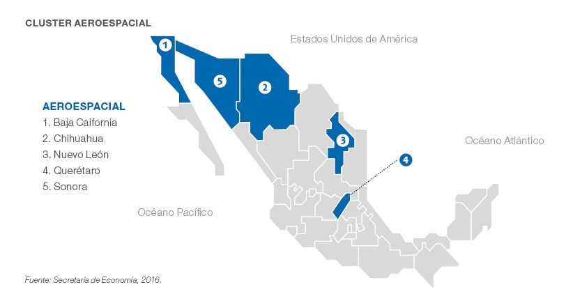
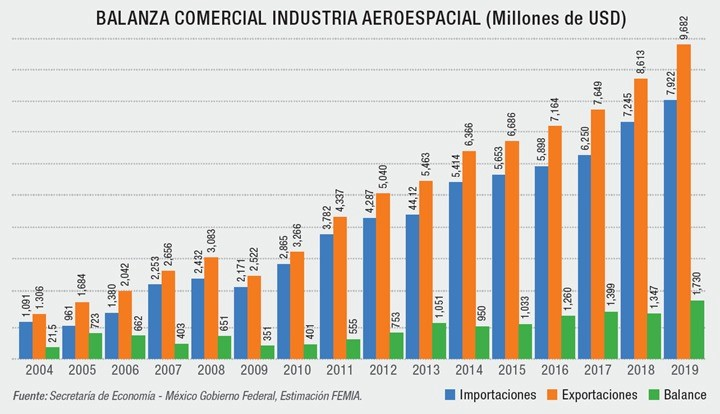
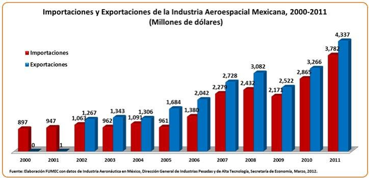

En esta pagina daremos informacion acerca de la aeronautica para que vuelen sus mentes y asi nunca dejar de imaginar y mas sin preambulos indagen a la pagina y sean bienvenidos
La aeronáutica es conocida por ser una ciencia, su tarea es investigar, diseñar y desarrollar todos los equipos capaces de volar, y además se encarga de estudiar el conjunto de normas que permiten la correcta implantación en las aeronaves. Una rama de la ciencia relacionada es la aerodinámica, cuyo objetivo principal es el estudio del aire, su movimiento y la reacción de los objetos a su paso. Aunque esta ciencia es un poco más moderna que otras, sin duda ha captado la curiosidad de las personas y las ha inspirado a cumplir uno de sus sueños desde su invención.
En el campo de la aeronáutica, Leonardo da Vinci, un científico que observó cómo vuelan las aves, se dedicó a crear herramientas que permitieran volar a los humanos, pero también carecía de herramientas eficientes para el vuelo, y en el siglo XX, los hermanos Wright hicieron historia al desarrollar con éxito el primer avión de propulsión del mundo.
La industria aeronáutica global genera más de $450 mil millones de dólares y es una fuente de trabajo y actividades especializadas estrechamente relacionadas con el desarrollo de nuevas tecnologías, lo que permite la innovación y actividades de valor agregado en todo el mundo. En cuanto a las líneas de producción, especialmente aquellas involucradas en el diseño y fabricación de sistemas y componentes aeronáuticos más complejos.
Las características descritas hacen de la industria aeronáutica una industria muy atractiva, haciendo que México sea parte de la cadena global de esta industria, incrementando la participación en el sector, creando oportunidades para atraer inversiones y crear más negocios de valor agregado, ingeniería y diseño, y en definitiva investigación, y actividades de desarrollo que permitirán a México participar en programas de última generación desarrollados.
Las razones del aumento de esta actividad en el pais son:
Sin embargo, para crear las condiciones a largo plazo que permitan la atracción de inversiones y la realización de actividades en el sector de la aviación con su mayor contenido técnico, es necesario diseñar e implementar estrategias y acciones específicas en este sector que contribuyan a mejorar la competitividad.
Pasando al caso de México, se debe decir que se trata de un actor reciente en esta industria; como tal se le considera en la producción dentro de la industria aeronáutica, al lado de China, India y Sudáfrica (Brown & Domínguez, 2013). Factores importantes para el despegue de la industria aeronáutica en México en el siglo XXI han sido la llegada de empresas transnacionales y que se contaba con una industria automotriz y eléctrico-electrónica desarrollada. Ello hizo posible conformar una plataforma sólida que ha impulsado el desarrollo de capacidades más sofisticadas. Estos tres sectores comparten troncos en común que incrementan su competitividad en la escena global (González, 2015).
Así, de 61 empresas identificadas en 2004, para 2017 ya eran alrededor de 330. Se estima que 180 son extranjeras (OEM, Tier 1, Tier 2), treinta join ventures y setenta de capital nacional (Fumec, 2017). Están ubicadas en 18 estados del país entre los que resaltan por su dinamismo y crecimiento Baja California, Querétaro y Nuevo León.
México se concentra en el mercado de aeropartes, participa con el 1.8% del mercado global después de España e Italia y muy cerca de China. Alrededor del 71% de las exportaciones de México en este mercado tienen como destino los Estados Unidos, cuyo valor es de aproximadamente 7300 millones de USD. En cuanto a las importaciones, se observa una clara dependencia (60%) respecto de los insumos provenientes de Estados Unidos y Canadá.
En cuanto a la actividad que desarrollan las empresas instaladas en México, el 72.3% se dedica a la manufactura, el 11.1% al MRO, el 13.2% a ingeniería y diseño, y el 3.4% está representado por instituciones de apoyo que incluyen centros de investigación y universidades.
 La industria aeroespacial mexicana está compuesta por empresas locales y de capital extranjero establecidas en el país centradas en actividades de manufactura, ingeniería, mantenimiento, reparación y supervisión para el sector.
Según el censo del Instituto Nacional de Estadística y Geografía - INEGI el sector cuenta con alrededor de 140 fabricantes de equipo aeroespacial4 que emplean a más de 41.000 profesionales (2018)5. La mayor parte cuentan con certificaciones NADCAP (National Aerospace and Defense Contractors Accreditation Program) y AS9100.
Compañías como Bombardier, Grupo Safran, General Electric, Honeywell y Airbus han desarrollado en México centros de diseño e ingeniería, laboratorios y líneas de producción para el desarrollo de nuevos motores, componentes y fuselajes. Otras empresas presentes en el país son: Boeing, Sukhoi, Embraer., AVIC – Aviation Industry Corporation in China, COMAC - Error! Hyperlink reference not valid. o MITSUBISHI Aircraft Corporation.
El desarrollo del sector se concentra principalmente en cinco entidades federativas que ha llevado a la formación de clústeres que detallamos a continuación por su importancia en la Inversión Extranjera Directa (IED) recibida desde 1999, según datos de la Secretaría de Economía:
El estado tiene una importante tradición en la industria automotriz, lo cual ha facilitado de manera significativa el florecimiento del sector aeroespacial. Es el principal receptor de IED del sector, con una inversión acumulada de 989,71 millones de dólares (periodo 1999-3T 2020), siendo España el segundo inversor por detrás de Estados Unidos. Las principales exportaciones de Querétaro se concentran en mercancías para el ensamblaje, fabricación de aeronaves o aeropartes, turborreactores, trenes de aterrizaje y sus partes, y mercancías destinadas a la reparación o mantenimiento de aeronaves y sus partes. Algunas de las empresas que operan en la región son: Bombardier, Aernova, Airbus, ETU División Aeronáutica, Global Composites Manufacturing, HYRSA, ITP Aero, RYMSA o PCNC.
Es el hub aeroespacial más antiguo y de mayor tamaño de México, acogiendo a casi un tercio de las compañías del sector. La industria de Baja California es principalmente reconocida por su innovación en el diseño de interiores de aeronaves, así como por los tests de integración completa. En cuanto a manufactura, el estado se ha especializado en maquinaria de precisión, sistemas eléctricos e hidráulicos y procesos de conformación de placas metálicas. Es el segundo destino de la IED del sector, con una inversión acumulada de 716,69 millones de dólares (periodo 1999-3T 2020). La procedencia de las 80 empresas establecidas en el estado se compone de la siguiente forma: 61,25 % EE. UU., 20 % México, 11,25 % Francia, 3,75 % Reino Unido, 1,25 % Alemania, 1,25 % Suecia y 1,25 % Taiwán. Algunas de ellas son Honeywell, Grupo Safran, Collins Aerospace, Gulfstream y Lockheed Martin.
Se ha especializado en la maquinaria de alta precisión, aeropartes, arneses, equipamiento para aterrizajes de emergencia en el mar, asientos y tratamientos térmicos y químicos para metales. Se sitúa en tercer lugar por IED acumulada con 682,56 millones de dólares recibidos (periodo 1999-3T 2020). Algunas de las principales empresas presentes en la región son Beechecraft, Bell Helicopter, Honeywell, Ez Air, Kaman Aerosystems, Grupo Safran, Soisa Aircraft Interiors o Textron Aviation, entre otras.
Es el cuarto mayor receptor de IED del sector, con una inversión acumulada de 341,26 millones de dólares (periodo 1999-3T 2020). Algunas de las principales empresas son Aero Alterno, Azor, Aerovitro, Aeisa, Cimsamex, Hemaq, Mimsa y Quimmco.
Ha seguido una política de especialización en la fabricación de turbinas y pretende establecerse como uno de los líderes en esta rama. Se sitúa como el quinto estado receptor de IED acumulada con 238,90 millones de dólares (periodo 1999-3T 2020). Cuenta con 60 empresas repartidas entre la capital, Hermosillo, Guaymas y Empalme, que abarcan procesos de fundición, maquinado y procesos secundarios, aeroestructuras y materiales compuestos. Además, se está trabajando en nuevas capacidades en el sector como maquinados y tratamientos químicos y en la parte de turbinas con el forjado, fundición y recubrimiento. Algunas de las empresas del clúster son Goodrich, Rolls-Royce, Esco, Radiall, Williams International, Incertec, Bodycote, Ducommun AeroStructures, Groupe Latecoere o Daher.
De acuerdo con René Espinosa, presidente de la Federación Mexicana de la Industria Aeroespacial (FEMIA), actualmente no se puede negar que esta industria ha tenido mermas por la crisis enfrentada debido al COVID-19: “Probablemente nos tomará un par de años regresar a los números que tuvimos en 2019, con un crecimiento promedio de 14 % anual en los años anteriores; sin embargo, estos retos nos hacen mirar por oportunidades y nuevas fronteras”. “En 2019 cerramos con 368 instalaciones industriales, de las cuales 318 correspondían a MFG, 43 a MRO y 40 a D&E. Asimismo, ese año las exportaciones fueron por 9,682 millones de dólares; sin embargo, en 2020 el principal motor de negocio de la industria (aviación civil-comercial) se vio afectado, así como la demanda de aviones”, explicó Lizcano. El directivo agregó que 2020 terminó con una baja en la industria aeronáutica de entre 25 y 45 % en la producción con relación a 2019: “El impacto en el número de instalaciones industriales aún es desconocido, esperemos que sea el menor posible, pero tal vez puedan llegar a quedar alrededor de 300 instalaciones industriales”. Lizcano indicó que la industria ha registrado una pérdida de alrededor de 20,000 empleos directos, al menos temporalmente. Asimismo, señaló que la cifra estimada de exportaciones en 2020 fue de 6,250 millones de dólares, en tanto que en 2021 sería de 7,625 millones de dólares y en 2022 de 8,845 millones de dólares. “Todas estas estimaciones siguen sujetas a los tiempos que nos marca el virus. Tenemos un entorno de muchos retos hacia adelante, pero la industria es resiliente y regresará una vez resuelta la crisis de salud. Para 2023 tendríamos una recuperación de los niveles de 2019”, refirió Lizcano. 
Desde la cancelación del NAIM, la puesta en marcha del Felipe Ángeles, la inexplicable falta de apoyo al sector durante la pandemia del 2020, la fiscalización irrestricta e insensible de las aerolíneas comerciales en plena crisis económica, el rediseño del espacio aéreo del centro del país, la descalificación de organismos internacionales, la reticencia a sumarse a acuerdos transnacionales y ahora la intimidación deliberada -junto con la descalificación sumaria- de los profesionales de la aeronáutica para evitar evidenciar malas decisiones gubernamentales, imposible es negar que tenemos un retroceso profundo en el pensamiento crítico desde la oficialidad en materia aeronáutica, y un negligente olvido en el ámbito espacial. Prueba clara de ello ha sido la postura oficial -seguida con ciega abyección por cuantiosos seguidores ideológicos particulares, por suscripción dogmática o por incentivo económico- de descalificar, insultar y denigrar a cualquier actor que se manifieste en contra de las determinaciones gubernamentales en materia aeronáutica en México, como en tantos otros sectores. A nivel nacional e internacional se ha evidenciado algo importante: las “contra-críticas”, descalificaciones, e intentos por acallar opiniones contrarias a las posturas oficiales no tienen ningún sustento. De hecho, muchos comentarios en contra de aquellos que se han manifestado contra las determinaciones oficiales carecen de argumentos, pero se han caracterizado por insultar y denostar en base a subjetividades ideológico-dogmáticas y a percepciones totalmente descontextualizadas. Esto no habla de un buen nivel de discusión, de análisis, o de reflexión; más bien habla de una reacción oclocrática, demagógica, y carente de sentido racional. Es decir, reaccionan en base a aferrarse a sus ideas, tengan razón o no. Pero aquí el lector crítico podría argumentar que esto parece un proceso generalizado en muchos ámbitos de la vida cotidiana del México contemporáneo. Lamentablemente esto es cierto, pero en el caso de la aviación es mucho más peligroso, ya que la falta de posturas y reflexiones críticas e informadas puede llevar a situaciones prevenibles, que en muchas ocasiones cuestan vidas humanas. La reputación y presencia de nuestro país se ha visto dolorosa y lamentablemente dañada por un conjunto de decisiones mal sustentadas en materia aeronáutica, y esto llevará invariablemente a un costo profundo en el mediano y largo plazo. Desde pérdida de inversiones hasta pérdida de confianza, todo contribuye a un deterioro de la imagen y posición de México ante el mundo.
Hoy, en México, tristemente estamos siendo testigos de un recurrente fallar en el diseño e implementación de políticas y programas. Y más triste aún, en el tema de la aviación, desde hace ya más de tres sexenios. ¿Por qué?... Porque no todo es el NAIM, no todo es la saturación del espacio aéreo del Valle de México. Porque tanto en aviación civil como en aviación militar no se tienen claro planes de desarrollo con “mentalidad de avance”, no sólo con “mentalidad de supervivencia”. Sólo para pensarlo, de acuerdo con el reporte en marzo pasado de la IATA sobre el valor de la aviación en México, los números en general estaban así: • 74 aerolíneas operando en México • 60 aeropuertos • 840,000 vuelos por año • 98 millones de pasajeros vuelan anualmente a México • Se conecta a 135 destinos internacionales a través del transporte aéreo • Se ha aumentado a más del doble de pasajeros transportados en los últimos 10 años (131 millones). • El gasto promedio de los turistas internacionales en México es de $932.2 USD • 1.4 millones de empleos son sustentados por el transporte aéreo en México • 3.3. % del PIB total de México proviene del transporte aéreo. Así pues, la aviación es un facilitador económico significativo para México. Contribuye con 38,000 millones de dólares al Producto Interno Bruto (PIB) del país y genera más de 1 millón de empleos. La conectividad aérea promueve el turismo y facilita el comercio, así como la conexión de amigos y familias y el intercambio de conocimientos e ideas. El transporte aéreo representa un aporte importante a la economía mexicana, creando empleos y fomentando riqueza: • Las aerolíneas, los operadores de aeropuertos, las empresas del aeropuerto (restaurantes y tiendas) y los proveedores de servicios de navegación aérea emplean a 212.000 personas en México, según es estudio más reciente de la consultoría Oxford Economics. La industria también apoyó directamente una contribución bruta de valor agregado de US$ 16,5 mil millones al Producto Interior Bruto (PIB); • Además, al comprar bienes y servicios de proveedores locales, el sector apoyó otros 300.000 puestos de trabajo y US$ 7,9 mil millones en PIB; e incluyendo la actividad inducida por el gasto de salarios etc., el sector apoyó otros 112.000 puestos de trabajo y US$ 2,9 mil millones en PIB; • Los turistas extranjeros que llegan a México por vía aérea y que gastan su dinero en la economía local, apoyan otros 423,000 empleos y contribuyen en US$ 10 mil millones a la economía mexicana. 
Costos Los bajos costes de producción, operación y de transporte ponen a México en una posición ventajosa con respecto a los demás países, se estima que la fabricación de partes de aeronaves es 30% más barato en la República mexicana que en la Unión Europea. Riesgo de inversión La confianza de inversionistas en el sector Aeronáutico resulta mayormente favorable hacia México, posicionándose por encima de países como Colombia, Brasil e India, producto de la confianza en la estabilidad macroeconómica. Potencial de consumo y crecimiento El sector Aeronáutico es uno que ha tomado bastante fuerza dentro de nuestro país, en 2019 la fabricación de equipo de transporte aeronáutico se posicionó como la actividad económica con mayor potencial de crecimiento y entró en los diez primeros con mayor potencial de crecimiento en consumo interno en los Estados Unidos Mexicanos. Esfuerzos para capturar el potencial Como se dijo, la industria aeronáutica en México ha tomado bastante fuerza, incrementando la inversión tanto nacional y extranjera que recibe como en industria en sí, aumentando el número de fábricas, empresas y personas dedicadas a este sector. Gracias a este crecimiento constante y el impacto positivo que hace en la economía, a pesar de haber todavía obstáculos dentro de esta industria, México ha realizado buenos esfuerzos para florecer el potencial de este sector. Además de todo lo anterior, México cuenta con ventajas más específicas como: • Orientación y fomento de la industria aeroespacial en torno a la atracción de armadoras (OEM’s) que sirvan como tractoras para la generación de proveeduría local y transferencia tecnológica. • Costo competitivo en mano de obra. Esta es una gran ventaja, no sólo a nivel regional (Norteamérica) sino a nivel global (Asia, Sudamérica México cuenta con 190 empresas aeroespaciales, la mayoría de ellas extranjeras. Las empresas mexicanas, en su mayoría se basan en TIER 3 y proveeduría general, aunque existe un crecimiento en TIER 2 también. • Concentración regional de industrias relevantes al sector aeroespacial. Tal es el caso de las regiones llamadas “Corredor Pacífico” y “Corredor Centro-Norte” que pueden brindar capacidad para producción de sistemas, controles para propulsión y diseño, así como el ensamblaje y sub-ensamblaje de componentes especializados. • Firma con Estados Unidos en el 2007 del Acuerdo Bilateral de Seguridad Aérea (BASA) y disposición para negociar un convenio similar con la Secretaría de Transportes de Canadá, además de incorporarse al Acuerdo para el Control de la Exportación de Armas Convencionales y Tecnología de Uso Dual (Acuerdo Wassenaar). • Eliminación de aranceles a la importación de componentes aeronáuticos.
• Federación Mexicana de la Industria Aeroespacial (FEMIA): http://www.femia.com.mx • Cámara oficial del aerotransporte (Canaero): https://canaero.org.mx/ • Secretaría de Comunicaciones y Transportes (SCT): https://www.gob.mx/sct • Internacional Metalmecánica: http://www.metalmecanica.com/ • México Industry: https://mexicoindustry.com/ • Modern Machine Shop: https://www.mms-mexico.com/ • T21: http://t21.com.mx/aereo